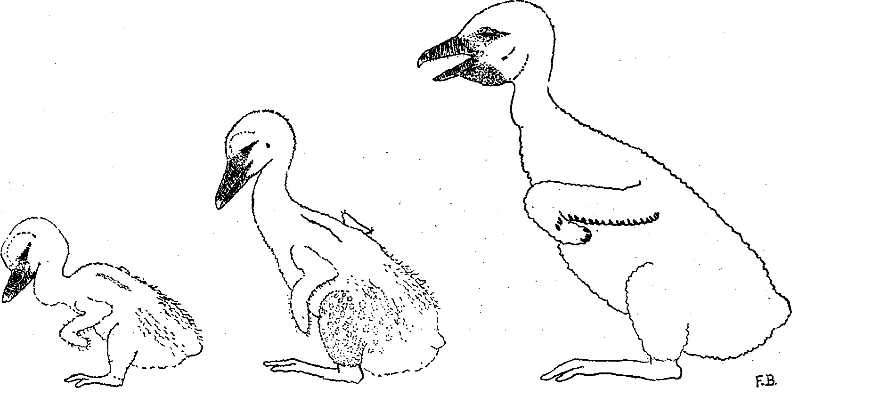

Warning: package 'here' was built under R version 4.2.2A Match Made in Landfills?
Exploring the diversity and burden of antimicrobial resistance genes carried by white stork (Ciconia ciconia) throughout the breeding season in Madrid, Spain
Highlights
Our results suggest that landfills may not be as impactful as previously believed to the emergence and maintenance of AMR in this system.
Storks are most impacted by multi-drug resistance and ARG burden when anthropogenic waste is most heavily consumed later in the breeding season.
This species appears to be a good sentinel for anthropogenic impact on environment.
Future efforts in stork AMR research should focus on exploring the relationship between other anthropogenic environments (e.g., agricultural pastures) and health.
Abstract
Anthropogenic environments are hotspots for the emergence and maintenance of antimicrobial resistance. Agricultural pastures and landfills are of particular interest due to their complex microbial communities and abundant wildlife visitation, which could facilitate the exchange of antimicrobial resistance genes (ARGs) via horizontal transfer. Wild birds that occupy these environments may become both reservoirs and transporters of ARGs. The White Stork is a highly urbanized wading bird that has significantly changed its ecology due to shifts in Spanish waste management toward open-air landfills. This species now heavily forages at landfills, which provide abundant food and allow for improved reproductive success. Birds that are dependent on anthropogenic resources, such as storks, provide the ideal opportunity to understand the emergence and spread of AMR.
We evaluated the diversity and quantity of ARGs in storks during three periods of the breeding season (defined by distinct foraging strategies). A total of 31 nests at Prado Herrero were sampled between March-July (2020-2021). Fresh feces were collected from 31 nests to evaluate the presence of 23 important ARGs affecting eight antibiotic classes via quantitative PCR. All nests carried multiple ARGs. Over 70% of nests had multi-drug resistance to at least 3 antibiotic classes during at least one time-period. Generalized Linear Mixed Models revealed that increased diversity in antibiotic class resistance, amount of ARGs present in a sample, and multi-drug resistance were associated with increased adult age and decreased landfill use.
Our results suggest that landfills may not be contributing significantly to the emergence and maintenance of AMR in this system. Little literature exists on the relationship between stork habitat selection and health outside of landfill use in Spain. Future efforts in stork AMR research should focus on exploring the relationship between agricultural land use and health.
Introduction
Questions/Hypotheses to be addressed
Does landfill use by storks increase the likelihood of carrying Antimicrobial resistance (AMR) genes and resistance gene burden?.
Stork that visit the landfill more often will have a higher likelihood of carrying AMR genes and have a higher burden of AMR genes.
Is nest success related to AMR gene burden and multi-drug resistance (i.e., resistance to 3 or more drug classes)?
Stork with more AMR gene burdens and multi-drug resistance will have lower nest success.
Description of data and data source
We have 126 observations taken over a period of 2 years. We are evaluating for the presence and burden of antimicrobial resistance genes in white stork feces.
Methods
Data aquisition
Experimental Design
Study Area — This study took place in Prado Herrero, a private cattle ranch located northwest of metropolitan Madrid and is surrounded by agriculture (e.g. beef cattle, cereal grains, legumes, and forage plants (“Renta Agraria,” 2019)). Prado Herrero is located within a nationally protected area (Cuenca Alta del Manzanares Regional Park) and is just north of Santillana Reservoir. This reservoir that was declared an Important Bird Area by Regional Catalogue of Reservoirs and Wetlands of the Community of Madrid due to the numerous resident and migratory species that utilize this water source . This cattle ranch has supported a productive white stork rookery where storks have been banded and monitored by biologists at UCM for over 20 years <CITE: Aguirre and Atienza>.
During the 2020 to 2021 breeding season, between the months of March to June, stork nests were identified, marked, and monitored for productivity. Of marked nests between the 2020 and 2021 breeding seasons, 31 with banded adults were used both years to lay eggs successfully. All 31 nests were located in ash trees (Fraxinus angustifolius ) found within the cattle pasture. Storks that breed within the Prado Herrero rookery are known to utilize Colmenar Viejo Landfill which is located approximately 12km southeast. Colmenar Viejo is an open-air landfill and it is second largest of it’s kind in the Madrid region <CITE: Alejandro 2022>.
Sample Collection — Between March to May 2020 and 2021, we collected feces from marked nests with banded adults in known breeding pairs at 3 points of the breeding season:
Adult sample during incubation
An early juvenile sample during the first two weeks of the chicks life when adults are believed to forage on natural sources <CITE: >.

White stork chick growth from 1 to ~10 days of age A late juvenile sample after chicks were past two weeks of age when adults forage on anthropogenic resources.

White stork chick from 21 to ~33 days of age.
Nests were visited in the late mornings and approximately one gram of fresh feces was collected from the perimeter of the nest structure into a sterile Eppendorf tube (). Samples were maintained cold in a portable cooler with frozen gel packs and frozen in a −20°C freezer within 4 hours of collection and processed at a later date.
Ethics statement: All animal handling was authorized by Cumunidad de Madrid: Consejeria de Medio Ambiente, Administracion Local y Ordenacion de Territorio. The permit number is D.N.I. nº 07.239.972-D.
Molecular analysis of ARGs
We performed total DNA extraction directly from fecal samples, by using a pressure filtration technique (QuickGene DNA Tissue Kit S, Fujifilm, Japan) following the manufacturer’s instructions. The 16S rRNA gene was amplified in each DNA sample by real time PCR (rtPCR) in 10-fold dilutions of extracted samples, according to Jiang et al. (2013)
Once validated, we analyzed DNA samples by with a panel of 21 different ARGs encoding resistance to eight different antimicrobial classes: tetracyclines (tet(A), tet(B), tet(Y), tet(K), tet(M), tet(Q), tet(S), and tet(W)), sulfonamides (sulI and sulII), aminoglycosides (str and aadA), phenicols (catI and catII), macrolides (ermB and ermF), quinolones (qnrS and qnrB), betalactams (blaTEM and mecA), and polymyxins (mcr-1). All rtPCR reactions utilized premade gelled format 96-well plates (Biotools, B &M Labs, S.A., Madrid, Spain), with the exception of blaTEM and mecA genes which used the Sybr GreenTM and TaqManTM probe, respectively. Our thermal cycle was the same for all the rtPCR reactions [6′ 95 °C, 40× (10″ 95 °C, 30″ 60 °C)], with alignment and extension in the same step, at constant temperature of 60 °C. A melting curve step was performed at the end of the qPCR reaction to validate the authenticity of the positive (Nieto-Claudin et al., 2019).
We quantified the relative burden of each gene for each sample via the cycle threshold (Ct) for the 16S rRNA and the Ct value of the individual ARG using a previously published formula (Esperón et al., 2020).
Statistical analysis
Presence absence ARG results obtained from the fecal samples between 2020 to 2021 were used for simple summary statistics. Samples were classified as “multiresistant” if they were resistant to three or more of the 8 antibiotic classes that we evaluated for in this study (Blanco-Peña et al., 2017). In addition, we applied the following formula to estimate the percentage of bacteria harboring ARGs: x = 10[2+0.33(ct16S-ctARG)], where x individual percent gene burden in the sample (i.e., the estimated number of copies of the gene present per reaction). Results were expressed in log10, ranging from −8 ( zero to a negligible amount of the bacteria in the sample carried an ARG) to 2 (all or 100% of the bacteria in the sample carried an ARG). The inverse Log10 was then applied to results so they could be totalled and used to evalute total gene burdens accross sampling periods.
Several linear mixed models (LMM) were constructed to evaluate multi-resistance and ARG burden as response variables with nest as a random factor. Covariates considered with each response variable included adult age, adult mean land fill use index (LUI), sample period (as described above), and nest success. Landfill use was quantified by physically observing a banded stork at Colmenar Viejo during weekly visits from March to June in 2021. The LUI was calculated as the number of observations of one particular bird within the total number of visits to landfill per year <CITE Alejandro 2022>. If a banded adult was not seen at the landfill during the breeding season, they were assigned a LUI of 0, suggestive of no resource provisioning at the landfill. All covariates were evaluated for correlation, no covariates were correlated with all the Spearman’s correlation coefficients (rho) < 0.5 and the p > 0.05. All continuous variables (LUI, age, and nest success) were then standardized prior to analysis.
All models were constructed with only 2021 data, as the COVID-19 pandemic prohibited the collection of LUI data in 2020. Models were built and fitted to data using the statistical package tidymodels in Program R (R version 4.2.1, www.r-project.org).
Results
PENDING
Discussion
Summary and Interpretation
As multi-drug resistance and class diversity increase (similar things I know) throughout the breeding season (compounding effect likely), mean LUI decreases and nest success decreases (makes sense because in your prior papers you have found increase nest success with increased LUI).
Resistance gene burden appears to increase as mean LUI use and age increase. o Most of the burden is due to blaTEM, a common resistance gene associated with anthropogenic impact. Sampling period does not appear to explain burden, but the top blaTEM model did show a trend in burden increasing from the 2nd sampling period to the 3rd sampling period and age.
Conclusions
LUI appears to be correlated with higher levels of AMR gene burden in storks. As LUI increases thorough the breeding season (Bialas et al 2021) resistance gene burden also increases with beta lactam resistance contributing to the majority of the burden. However, multidrug resistance appears to decrease as LUI increases, thus it is likely that storks are being exposed to antimicrobial resistance genes at other foraging areas (urban centers, agricultural pastures, etc.).
Our results suggest that landfills may not be contributing significantly to the emergence and maintenance of AMR in this system. Little literature exists on the relationship between stork habitat selection and health outside of landfill use in Spain. Future efforts in stork AMR research should focus on exploring the relationship between agricultural land use and health.